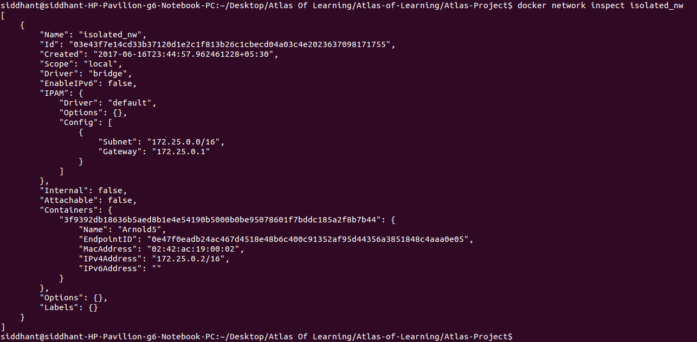

Installation steps using docker
1. First, make sure docker is installed. If not click here
2. Now, create a new docker network using the following command:
$ docker network create -d bridge <name of network>
e.g.
$ docker network create -d bridge isolated_nw
3. Download the neo4j image and run a container on it.
e.g. Let the name of the container be 'neo4jCon'
4. Add the container to the network created in step 2. using
$ docker network connect <name of network> <name of container>
e.g.
$ docker network connect isolated_nw neo4jCon
5. Check if the container was successfully added to the network using
$ docker network inspect <name of network>
e.g.
$ docker network inspect isolated_nw
Something like the following should be displayed to indicate successful addition:

In my case, I named the neo4j container as Arnold5.
Make a note of the IPv4Address of the added container, in the above case, it is 172.25.0.2. The /16 can be ignored.
6. Create a new folder anywhere on your file system. Go to that folder using cd.
7. Inside the new folder paste the Dockerfile along with the actual project folder, which is Atlas of Learning
Now when ls is executed you should be able to see that there is one folder named Atlas of Learning and a file named Dockerfile.
8. Your neo4j container will serve a neo4j database. This database has a USERNAME and PASSWORD.
Change these 2 values in the Dockerfile in lines 8 and 9.
In my case they were 'neo4j' and 'HBCSE' respectively.
ENV NEO4J_USERNAME=neo4j
ENV NEO4J_PASSWORD=HBCSE
Also take the IPv4Address we got in step 5. and change the value in line 9.
Append the port :7474 to the above IP.
e.g. In my case it was 172.25.0.2. And after appending the final value is 172.25.0.2:7474. Let the http:// protocol remain the same.
ENV GRAPHENEDB_URL="http://172.25.0.2:7474"
Save the changes made to the Dockerfile before proceeding.
9. Now use the docker build command to create an image from the Dockerfile and give the image a name.
$ docker build -t <repo name>:<version> .
e.g.
$ docker build -t aol:version8 .
10. Now we will create the final docker container on the image created in step 9. When we use the docker run command, an additional tag --network=<name> must be used as follows:
$ docker run -it -d --network=<name of network> --name=<name for container> -p 5000:5000 <repo name>:<version> python /home/Atlas_of_learning/run.py
e.g.
$ docker run -it -d --network=isolated_nw --name=AtlasLes10 -p 5000:5000 aol:version8 python /home/Atlas_of_learning/run.py
11. Thats it! You are good to go! Just check if the final container is running along with the neo4j container on the same network using docker network inspect.
e.g.
$ docker network inspect isolated_nw
You should be able to see something like this:
In my case, I named the ATLAS container as AtlasLes10.
12. You can start using the app in your browser at localhost:5000